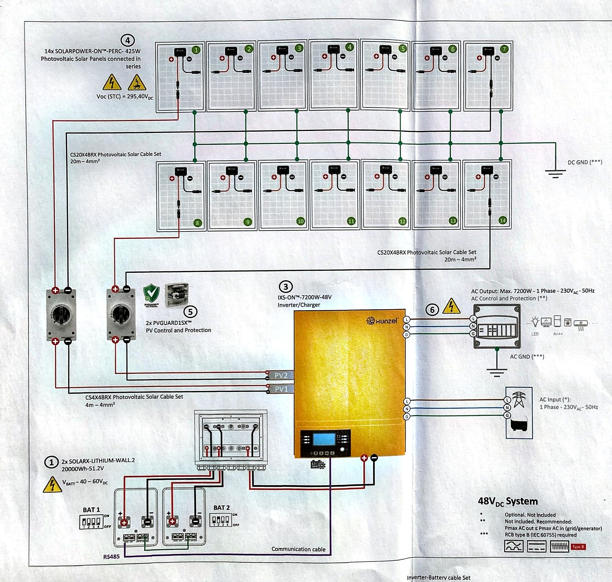
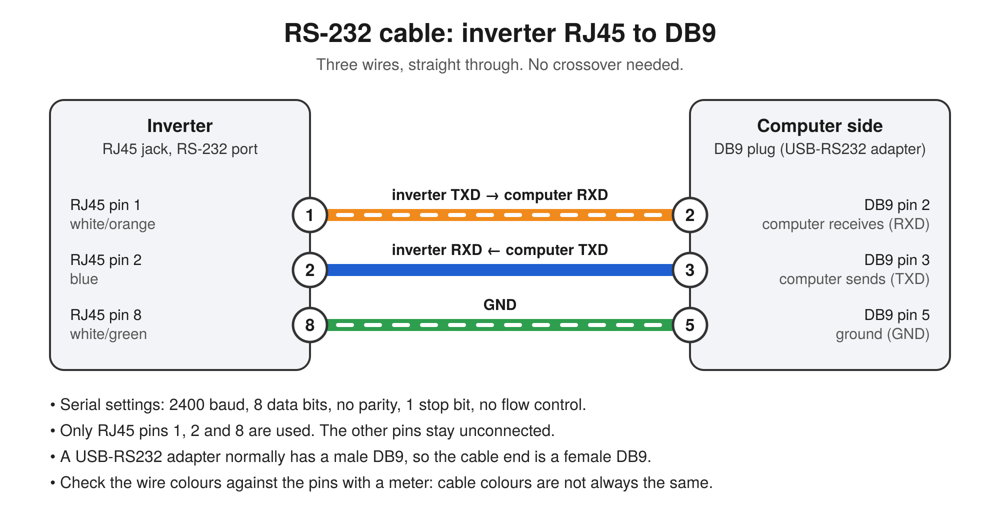

Xunzel IXS-ON 7200: read-only RS-232 monitoring
Read live values, settings and warnings from a Xunzel IXS-ON 7200 W solar inverter over its RS-232 port, with one small Python script and a menu. No packages to install.
This was built and tested on the Xunzel PACK ZERO+ AX 490 L solar kit (bought at Leroy Merlin in Portugal), and it only ever reads.

Read-only by design (and why)
This project never changes anything in the inverter. It only sends read commands.
- The kit is plug and play. The PACK ZERO+ is a matched set (lithium batteries, inverter, panels, PV protection), and Xunzel pre-configured the inverter for it.
- The settings are not ours to touch. Battery voltages, charge limits and battery type were chosen for the batteries in the kit. A wrong value can hurt the batteries.
- Warranty. Changing settings or resetting the inverter could make a warranty claim harder. We do not know exactly what Xunzel's warranty allows over RS-232, and we do not want to find out the hard way. Look, never touch.
- To change a setting, do it on the inverter itself, following Xunzel's instructions.
The rule is enforced in code: the script has a whitelist of query commands (all start with Q), one place that writes to the port, no way to type a command, and a self-test that checks setting commands are refused.
Why not the cloud app? (privacy)
Xunzel points buyers to the WatchPower / SolarPower phone apps (iOS and Android). Those apps work through a Wi-Fi module that sends the inverter's data to a cloud server. The platform maker's own description of its Wi-Fi module lists “cloud storage for history data and event log” and “remote monitoring and control of multiple inverters via mobile APP”.
That is not for us, and you may want to think about it too.
- Your electricity use is a diary of your life. A record of when power is used, minute by minute, shows when you are home, when you sleep, when you are away on holiday, and more. That data should not be stored on someone else's server, or even pushed to one.
- You cannot see where it goes. Once the module is online, data can leave your house without you noticing. Who runs the server, where it is, and who can read the data is not something we could find out.
- Remote control is the same door. An app that can change settings from anywhere is exactly what we do not want near a battery system. This tool only reads.
- A cable cannot leak. A logger on the RS-232 port, on a network that has no route to the internet, has nothing to send anywhere.
- Good to know: there is no local web page. We asked Xunzel support how to reach the inverter's internal web page. Their friendly, quick answer (June 2026): “This inverter does not have an internal web interface.” The inverter's Wi-Fi module gives you an address on its own network, but no page to open. So if you want local-only monitoring, the serial port is the way, and that is what this project is for.
To be fair: we have not captured the Wi-Fi module's network traffic, so we cannot say exactly what it sends. We only know what the manufacturer's documentation says it does. If you can measure it, please tell us.
On our kit the Wi-Fi module has never been connected to a home network, so we have not seen it send anything. The concern is about what it would do if it were. We also looked for a way to switch the module's radio off for a radio-free house. We found no setting in the manual or on the inverter's menu, and without an internal web page there is nowhere else to look. If you know a way, please tell us.
We have nothing against Xunzel. The kit works well and their support answered our question helpfully. This project exists to help other owners who want the same local, private setup.
Wiring

| Inverter RJ45 pin | Typical wire colour | DB9 pin | Signal |
|---|---|---|---|
| 1 | white/orange | 2 | inverter TXD to computer RXD |
| 2 | blue | 3 | inverter RXD from computer TXD |
| 8 | white/green | 5 | ground |
Serial settings: 2400 baud, 8 data bits, no parity, 1 stop bit, no flow control. You need a USB-to-RS-232 adapter with a DB9 plug (we used an FTDI FT232R). Wire colours differ between cables, so check them with a meter.
Test the adapter first, without the inverter: short DB9 pins 2 and 3 and check that what you type comes back. Never type into a terminal while the inverter is connected.
Quick start
git clone https://github.com/Terramadas/Xunzel-RS232-Protocol.git
cd Xunzel-RS232-Protocol
python3 xunzel_readonly.pyYou get a menu: quick status, live values, ratings and settings, flags, warnings, serial number and firmware, default settings, a repeating watch, CSV logging and a self-test. The script finds a USB serial port by itself. Everything is also written to xunzel_readonly.log, which contains your inverter's serial number, so do not publish it.
What you can read
| Command | What it gives you |
|---|---|
QPIGS | Live values: grid and output voltage, load, battery voltage and charge, PV voltage and power, status bits (21 fields) |
QMOD | Operating mode (battery, line, standby, fault, ...) |
QPIWS | Warning and fault bits (36 characters) |
QPIRI | Ratings and current settings (28 fields) |
QFLAG | Which options are switched on or off |
QDI | Default settings (read only; it does not apply them) |
QID, QVFW | Serial number, firmware version |
QET, QLT | Total PV energy generated / total load energy consumed, all-time (Wh) |
QED, QEM, QEY | PV energy generated for one day / month / year (Wh) |
QLD, QLM, QLY | Load energy consumed for one day / month / year (Wh) |
The energy commands take a date as an argument (e.g. QED20261124, QEY2026) rather than being fixed strings, so the CRC is different for every date the tool builds the right frame for you.
A frame is the ASCII command, two CRC bytes and a carriage return. The CRC is CRC-16/XMODEM with one extra rule: a CRC byte equal to 0x28, 0x0D or 0x0A is increased by one. Byte-by-byte frames, a C CRC routine and all field tables are in the protocol reference.
What we found on this inverter
The Xunzel IXS-ON 7200 speaks the common Voltronic/Axpert “PI30” protocol, but not exactly as the generic 2014 document describes it.
- Works: QMOD, QPIGS, QPIWS, QFLAG, QPIRI, QDI, QID, QVFW.
- Answers NAK (not supported): QPI and QVFW2.
- More fields than documented: QPIGS 21 (document: 17), QPIRI 28 (25), QDI 26 (25), QPIWS 36 characters (32).
- Reply times: 0.05 to 0.5 s. Polling QPIGS every 10 seconds is comfortable.
- Off-grid: with no grid connected, QPIWS always reports LINE_FAIL. That is normal.
- Firmware seen:
VERFW:00069.07. - Energy totals exist too, undocumented: eight more commands beyond the live values — QET/QLT (all-time) and date-based QED/QEM/QEY (PV) and QLD/QLM/QLY (load) — found by matching the inverter's own dAY/MON/YEA/tOL display screens against a test log, and cross-checked against the paper manual. Replies are an 8-digit Wh value. The scale on the day-period fields (QED/QLD) is not fully confirmed yet; verify against your own display before relying on them for anything precise.
- Two LCD menu items to leave alone: Program 37 (“reset all stored PV generated power and output load energy”) and Program 93 (“erase all data log”). Neither is reachable over RS-232, but don't navigate into or confirm them on the front panel — they would wipe the very totals above. The LCD's USB Function Setting menu, on the other hand, can export the full data log to a USB flash drive: a fully local, non-cloud alternative we have not tried ourselves yet.
The battery and the LIb setting
The kit uses 2 × Xunzel SOLARX-Lithium WALL2 10KWH-51.2V-200A (SXLW210K). Battery 2 is linked to battery 1 by a data cable, and battery 1 to the inverter. That link is RS485 and is a separate port from the RS-232 port used here, so this project never touches it.
On the inverter, PROGRAM 05 (battery type) is set to LIb, “LIb-protocol compatible battery”. The inverter reports battery type code 8, which very likely means LIb (our reading, not confirmed by Xunzel). The battery's charging range is 55.2 to 57.6 V and its end-of-discharge voltage is 44.8 V (backup use) or 48 V (cycle use); the inverter's bulk and float 57.6 V and under-voltage 46.4 V sit inside those limits. The inverter's max charging current reads 10 A, which looks low for two 200 A batteries; with a communicating battery the real limit is normally set by the battery over the data cable. We have not confirmed this.
Related work and sources
We are not the first to look at this protocol family. Independent sources we found useful, and that agree with what we measured:
- Voltronic RS232 Protocol document, HS/MS/MSX, 2014-08-22 — the generic protocol document this project is checked against.
- dwaves.de: WatchPower and Voltronic/MasterPower inverters on GNU/Linux — a detailed write-up of reading a similar inverter over USB/serial on Linux. It independently confirms the same CRC routine (the 0x1021 polynomial, with the 0x28/0x0D/0x0A byte bump) and the same 2400 8N1 serial settings, and notes that different firmware versions can return different field counts for the same command, which matches what we see here.
- manio/skymax-demo — an open-source C poller for the same protocol family.
- Skyboo: Monitoring a Voltronic Axpert MEX inverter under Linux — another independent write-up of the same protocol family.
If you know of other Xunzel-specific or IXS-ON-specific resources, open an issue or a pull request on GitHub.
FAQ
Can I use this on other Voltronic or Axpert inverters?
Possibly. The protocol family is the same, but fields differ between models. Reports are welcome. Remove your serial number from any output you share.
Is it safe for my warranty?
We only send read queries, like monitoring software does, but we cannot speak for Xunzel. Check your own warranty terms.
Why not use WatchPower?
The mobile app and Wi-Fi module send your data to a cloud server (see Privacy). This tool keeps everything local, logs to CSV and is easy to turn into an always-on logger (Arduino or Raspberry Pi with a MAX3232 level shifter).
Where is the manual for the IXS-ON 7200?
Your kit comes with a paper copy. Xunzel's datasheet lists the specifications; for the full manual ask info@xunzel.com.